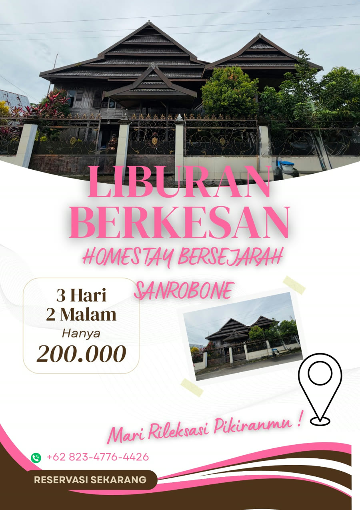

Tentang Akomodasi
Akomodasi merupakan salah satu komponen penting dalam sistem kepariwisataan yang berfungsi sebagai sarana penunjang bagi wisatawan selama melakukan perjalanan dan kunjungan ke suatu destinasi. Keberadaan akomodasi yang memadai tidak hanya memberikan tempat beristirahat bagi wisatawan, tetapi juga menjadi faktor yang memengaruhi tingkat kepuasan pengunjung terhadap suatu objek wisata. Dalam konsep desa wisata, akomodasi memiliki peran yang lebih luas karena tidak hanya berfungsi sebagai tempat menginap, melainkan juga sebagai media interaksi antara wisatawan dengan masyarakat lokal. Melalui akomodasi berbasis masyarakat, wisatawan dapat memperoleh pengalaman yang lebih autentik terkait kehidupan sosial, budaya, adat istiadat, serta aktivitas keseharian masyarakat setempat.
Desa Wisata Sanrobone yang terletak di Kabupaten Takalar merupakan salah satu desa wisata yang berkembang dengan mengusung konsep wisata sejarah, budaya, dan religi. Keberadaan berbagai situs peninggalan Kerajaan Sanrobone menjadikan desa ini memiliki daya tarik yang unik dibandingkan dengan destinasi wisata lainnya. Berbagai objek wisata seperti Benteng Sanrobone, Balla Lompoa, makam raja-raja, masjid tua, serta berbagai situs sejarah lainnya menjadi alasan utama wisatawan berkunjung ke kawasan ini. Seiring dengan meningkatnya kunjungan wisatawan, kebutuhan terhadap sarana akomodasi menjadi aspek yang semakin penting untuk diperhatikan dalam mendukung pengembangan desa wisata.

Pilihan Homestay
Tinggal bersama masyarakat dan rasakan kehidupan desa secara langsung.

Kamar Standar
Rp 200.000/malam
Kamar Budaya
Rp 225.000/malam
Kamar Bersejarah
Rp 250.000/malamFasilitas Homestay
Kebutuhan dasar yang umumnya tersedia di setiap homestay.


Reservasi Homestay
Hubungi kontak resmi untuk memesan homestay dan mengecek ketersediaan.
Dikelola oleh
Pokdarwis Desa Wisata Sanrobone
Email: desasanrobone22@gmail.com
Alamat & Titik Lokasi
Dusun Sanrobone, Desa Sanrobone, Kec. Sanrobone, Kab. Takalar, Sulawesi Selatan.